お金と手間だけがかかる実家
固定資産税と
- 1
RIVIAが 家を 借りて 宿を 運営し、 日々の 管理も 担 い ます。 - 2
出ていくだけの 維持費が、 毎月の 家賃収入 に 変わ り ます。
毎年の維持費 家賃な どの収入 管理の手間
固定資産税と
古すぎて
喜ばれる
お客様が
RIVIA
運営の
Who does what
| RIVIA | RIVIA | RIVIA | |
| RIVIA | RIVIA | RIVIA | |
| RIVIA | RIVIA | ||
| RIVIA | RIVIA | ||
| RIVIA | RIVIA | RIVIA | |
| RIVIA | RIVIA | RIVIA | |
| RIVIA | RIVIA | RIVIA | |
Simulation
＋333 | ＋713 | ||
この試算は、架空のモデル物件でのシミュレーション
条件は
契約は
ご自身で運営に関わり、より大きな利益を目指すなら
まずは
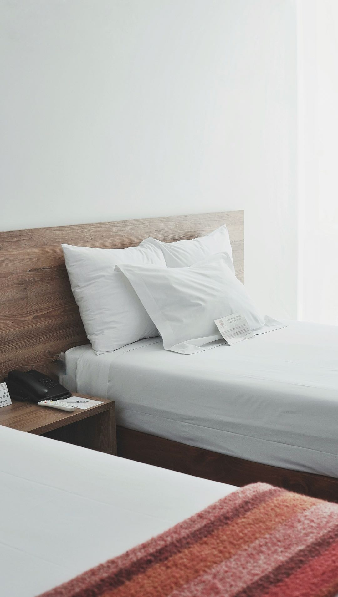

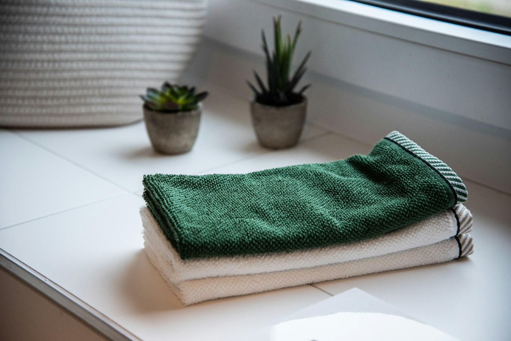
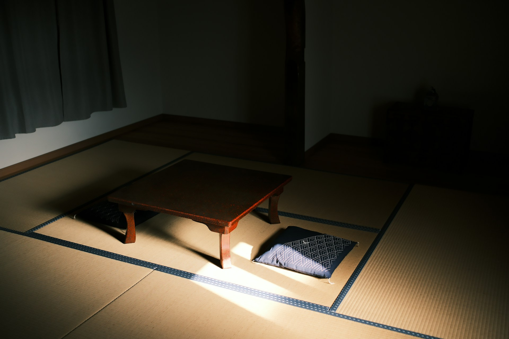
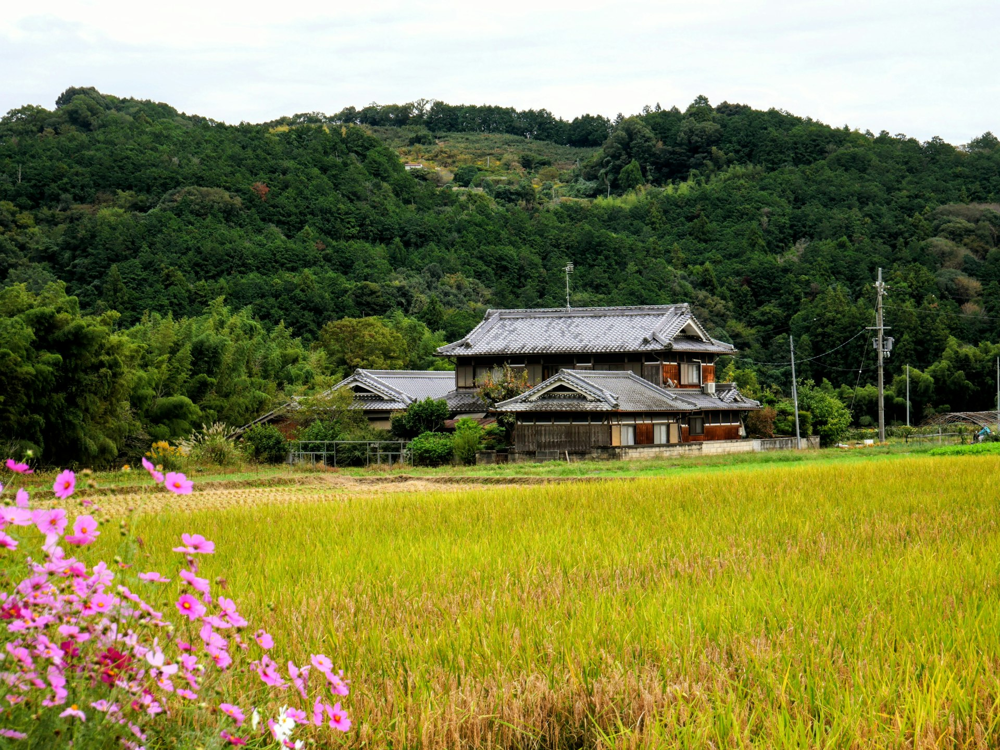

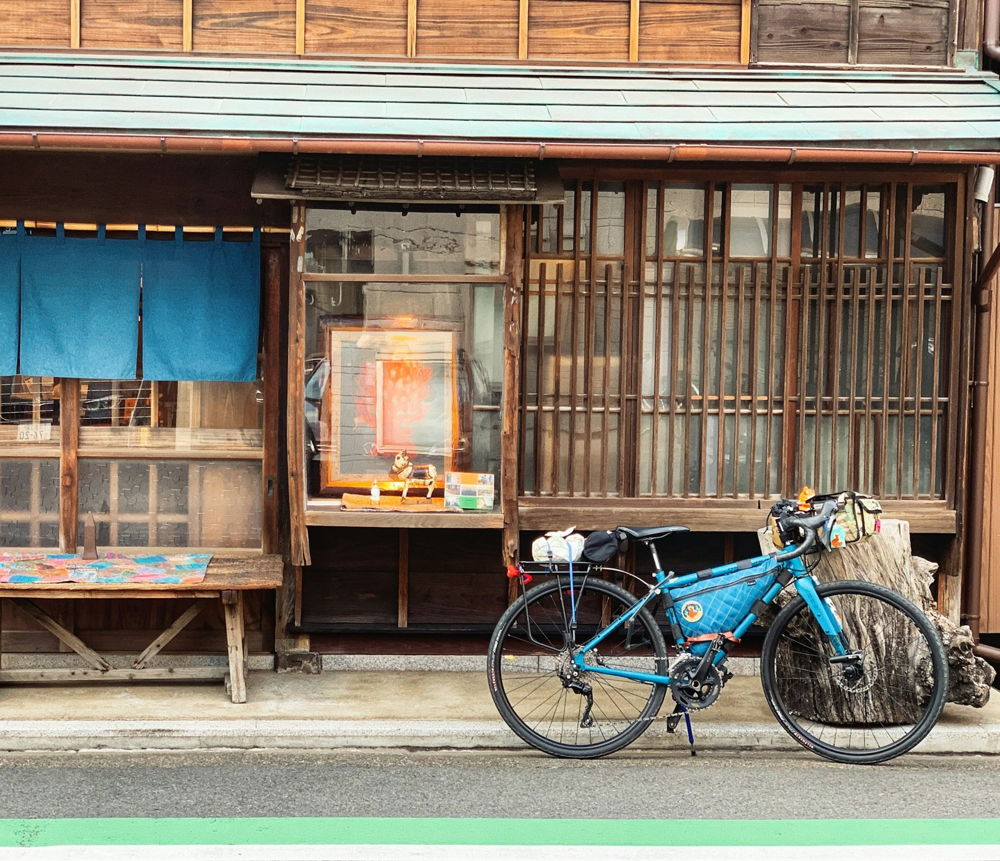
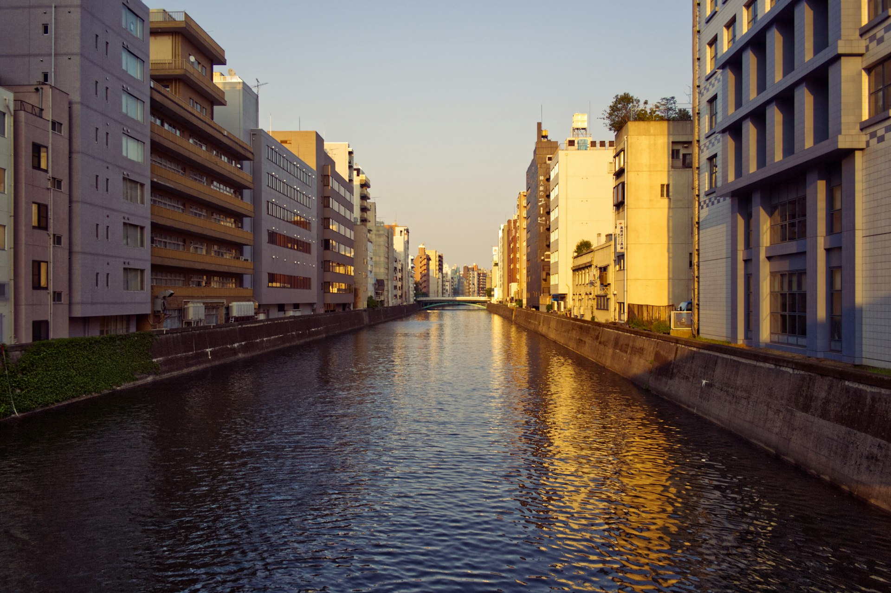


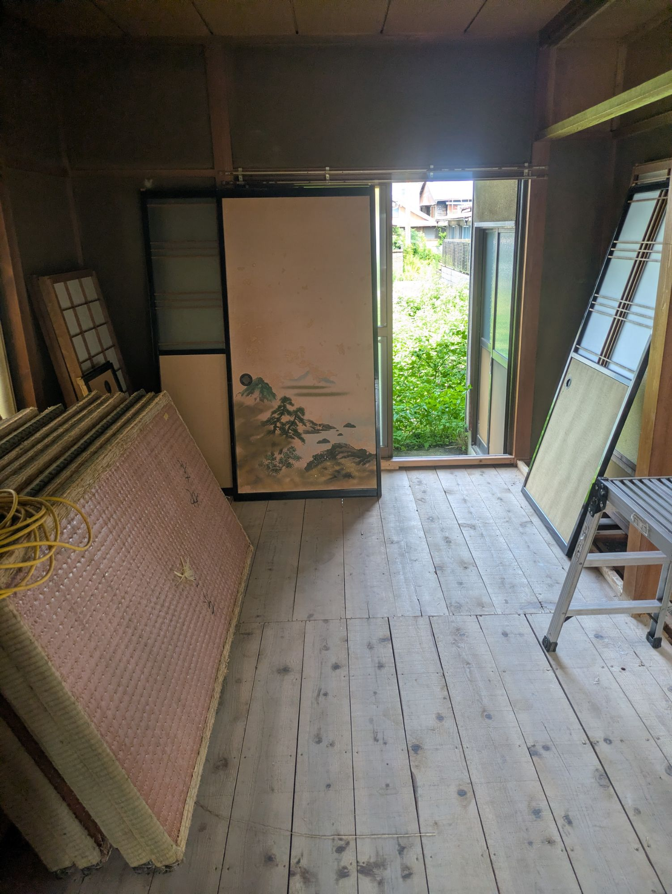

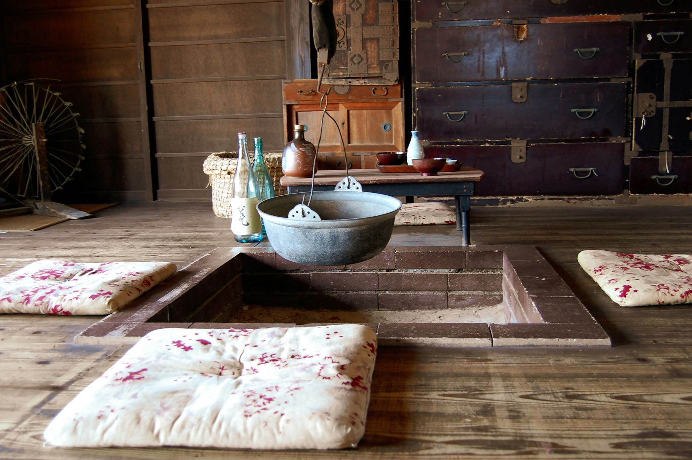
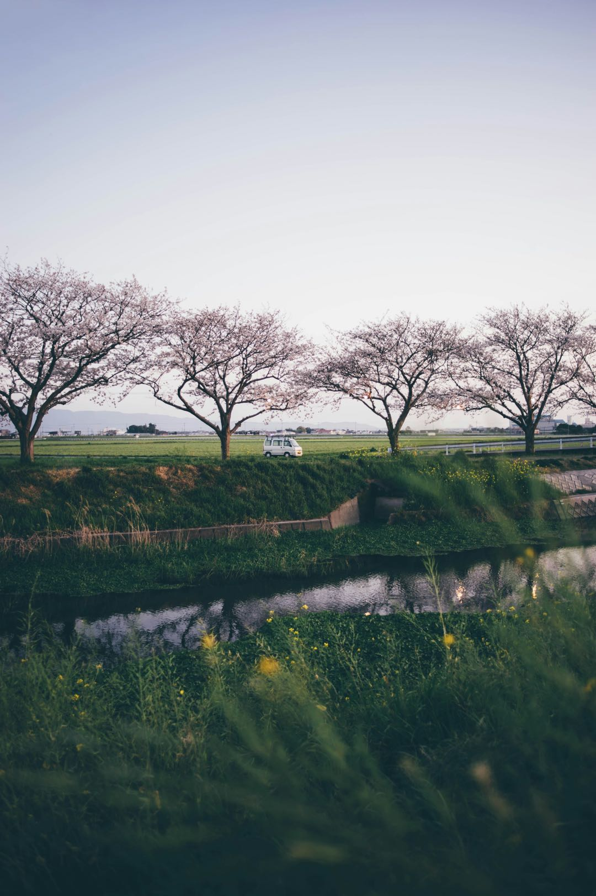


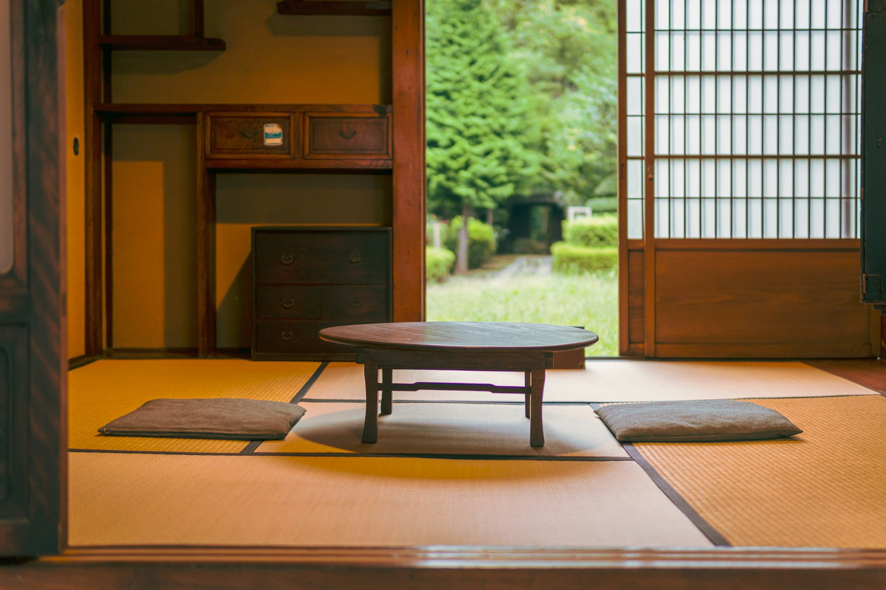
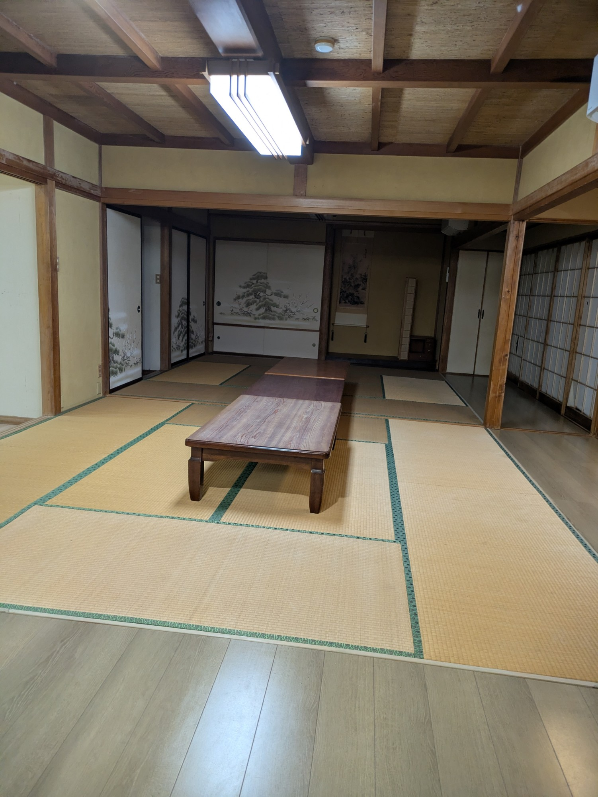
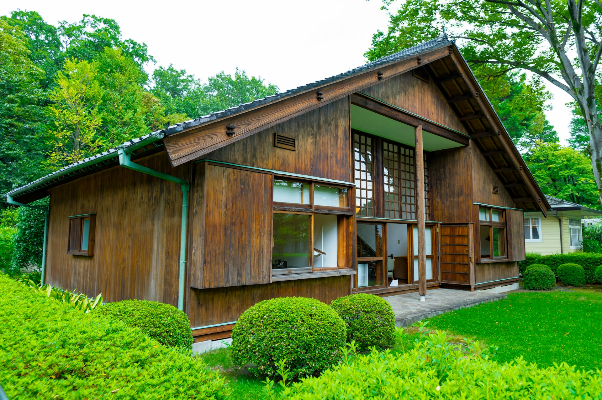


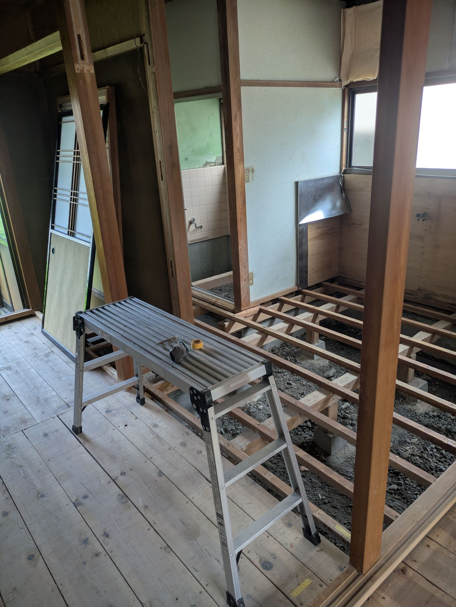


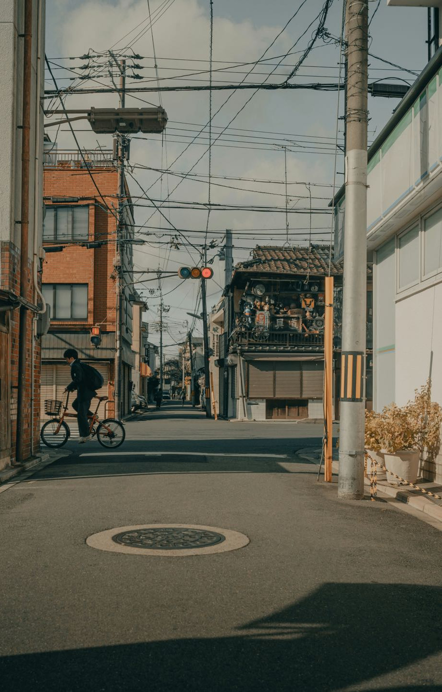
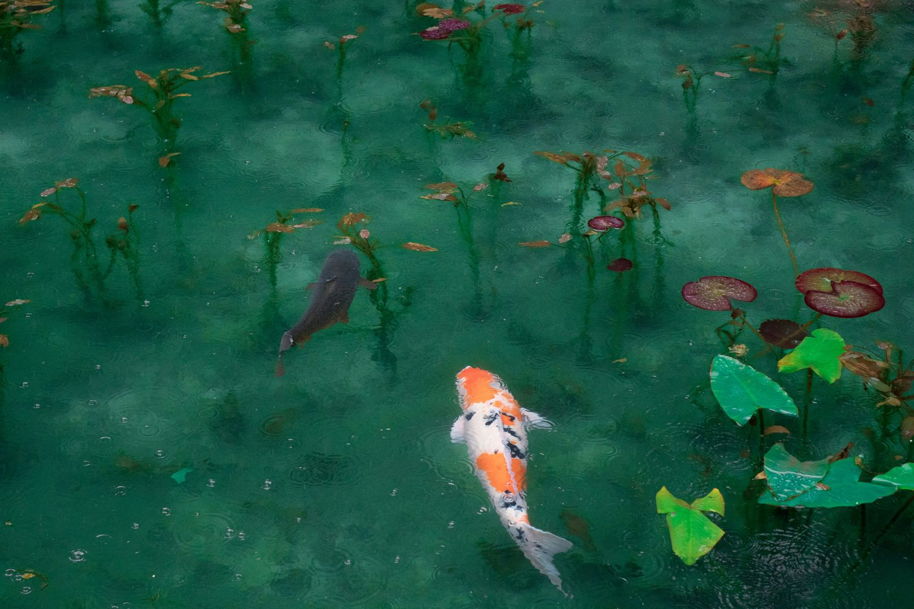